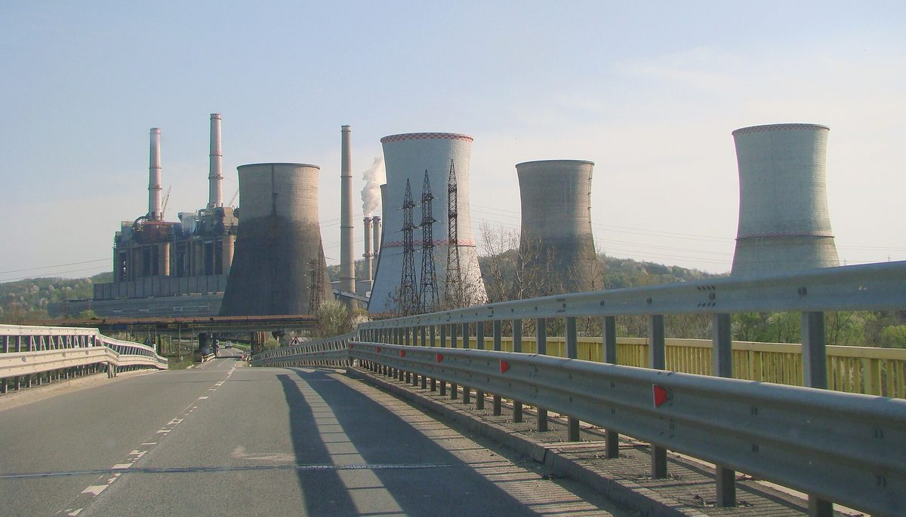

루마니아 탄광지대 고르지·돌지 군, 에너지공동체에 EU 기금 98% 무상 지원 공모…시민·아파트 주민회도 직접 신청

고르지 4,157만6,941유로·돌지 352만9,411유로 배정, 신청은 2027년 3월 31일까지…그린피스 루마니아, 40가구 아파트 한 동이면 자부담 8,000유로 예시 들며 11월 주민 워크숍
루마니아 남서부 석탄 지역인 고르지·돌지 군에서 시민과 아파트 소유자협회가 직접 에너지공동체를 꾸려 유럽연합(EU) 정의로운 전환 기금으로 사업비의 98%를 무상 지원받을 수 있는 공모가 진행되고 있다. 이 전용 공모를 정의로운 전환 프로그램에 넣도록 5년 가까이 요구해 온 그린피스 루마니아의 안드레이 크러추운(Andrei Crăciun)에 따르면, 에너지공동체 몫으로 고르지 군에 4,157만6,941유로, 돌지 군에 352만9,411유로가 배정돼 두 군을 합치면 약 4,511만 유로이고, 신청은 2026년 9월 30일부터 2027년 3월 31일까지 받는다. 이번 공모부터 지자체뿐 아니라 시민이 만든 공동체도 신청할 수 있으며, 루마니아에서는 개인·지자체·중소기업·협회·재단 가운데 5명 이상이 법인을 세워 국가 에너지공동체 등록부에 올리면 에너지공동체가 된다. 크러추운은 참여 가구가 40곳인 아파트 한 동을 예로 들어 사업비 최대 40만 유로에 자부담은 2%인 8,000유로 수준이 될 수 있다고 설명했고, 태양광 패널뿐 아니라 저장 배터리·히트펌프·스마트 계량기·에너지관리시스템, 생산지에서 소비지까지 전기를 보내는 설비, 신청서 준비와 사업관리 컨설팅 비용도 지원 대상에 든다고 했다. 그는 10년 전 거의 없던 루마니아의 프로슈머(전기를 생산하는 소비자)가 지금 40만 명에 가까워졌다며 에너지공동체도 같은 길을 걷기를 기대했고, 석탄 퇴출로 깊어진 에너지 빈곤 속에서 취약 가구를 공동체에 넣어 전기요금을 길게 낮추는 것이 목표라고 말했다. 그린피스 루마니아는 11월 시민·아파트 소유자협회를 위한 온라인 워크숍 2회와 전문가·기업을 위한 워크숍 1회를 열 계획이다.
시민에너지 관점
사업비의 98%를 무상으로 대고 아파트 주민회까지 직접 신청할 수 있게 문을 연 것은, 석탄 지역의 빈자리를 대형 발전 사업이 아니라 주민이 주인인 설비로 채우겠다는 설계로 보인다. 98%를 지원해도 서류와 절차가 주민을 지치게 한다는 우려가 나올 수 있지만, 오스트리아가 2021년 재생에너지확대법으로 에너지공동체를 도입하면서 국가 차원의 에너지공동체 조정 창구를 함께 열어 설립·운영 상담을 맡긴 것처럼, 행정 부담은 공공이 중간지원 조직으로 덜어 줄 수 있다. 한 번 주고 끝나는 요금 지원은 예산이 끊기면 사라지지만, 주민이 지분을 가진 설비는 전기요금을 낮추는 자산으로 지역에 남는다. 국내 석탄발전 폐지 지역의 정의로운 전환 재원도 주민이 직접 신청할 수 있는 공동체 몫과 설립을 돕는 지원 창구부터 갖춰야 한다.
출처: Jurnalul Olteniei 2026-10-26 Ionuț Jifcu 원문 보기
ルーマニアの炭鉱地帯ゴルジュ・ドルジュ両県、エネルギー共同体にEU基金98％を無償支援する公募…市民やマンション住民組合も直接申請可能に
ゴルジュに4,157万6,941ユーロ、ドルジュに352万9,411ユーロを配分、申請は2027年3月31日まで…グリーンピース・ルーマニア、40世帯のマンション1棟なら自己負担8,000ユーロとの例を示し11月に住民向けワークショップ
ルーマニア南西部の石炭地域であるゴルジュ県とドルジュ県で、市民やマンションの所有者協会が自らエネルギー共同体をつくり、欧州連合（EU）の公正な移行基金から事業費の98％の無償支援を受けられる公募が行われている。この専用公募を公正な移行プログラムに盛り込むよう5年近く求めてきたグリーンピース・ルーマニアのアンドレイ・クラチュン（Andrei Crăciun）氏によると、エネルギー共同体向けにゴルジュ県へ4,157万6,941ユーロ、ドルジュ県へ352万9,411ユーロが配分され、両県を合わせると約4,511万ユーロとなり、申請は2026年9月30日から2027年3月31日まで受け付ける。今回の公募からは自治体だけでなく市民がつくった共同体も申請でき、ルーマニアでは個人・自治体・中小企業・協会・財団のうち5者以上が法人を設立し、国のエネルギー共同体登録簿に登録すればエネルギー共同体となる。クラチュン氏は参加世帯が40のマンション1棟を例に、事業費は最大40万ユーロ、自己負担は2％の8,000ユーロ程度になり得ると説明し、太陽光パネルだけでなく蓄電池、ヒートポンプ、スマートメーター、エネルギー管理システム、発電地から消費地まで電気を送る設備、申請書類の準備や事業管理のコンサルティング費用も支援対象になると述べた。同氏は10年前にはほとんどいなかったルーマニアのプロシューマー（電気を生産する消費者）が今では40万人近くに増えたとして、エネルギー共同体も同じ道をたどることに期待を示し、石炭からの撤退で深まるエネルギー貧困の中で、弱い立場の世帯を共同体に加えて電気料金を長期的に下げることが目標だと語った。グリーンピース・ルーマニアは11月、市民とマンション所有者協会向けのオンラインワークショップを2回、専門家・企業向けを1回開く予定だ。
市民エネルギーの視点
事業費の98％を無償で賄い、マンションの住民組合まで直接申請できるよう門戸を開いたことは、石炭地域の空白を大型発電事業ではなく住民が所有する設備で埋めようとする制度設計とみられる。98％を支援しても書類や手続きが住民を疲れさせるとの懸念もあり得るが、オーストリアが2021年の再生可能エネルギー拡大法でエネルギー共同体を導入した際、国レベルのエネルギー共同体調整窓口を同時に設けて設立・運営の相談を担わせたように、行政負担は公的な中間支援組織が軽くできる。一度きりの料金支援は予算が途切れれば消えるが、住民が持ち分を持つ設備は電気料金を下げる資産として地域に残る。韓国の石炭火力廃止地域の公正な移行財源も、住民が直接申請できる共同体枠と、設立を支える支援窓口から整えるべきだ。
出典: Jurnalul Olteniei 2026-10-26 Ionuț Jifcu 原文を読む
罗马尼亚煤矿区戈尔日、多尔日两县推出能源社区专项招募，欧盟基金无偿补助98%…市民和公寓业主协会也可直接申请
戈尔日获配4,157万6,941欧元、多尔日获配352万9,411欧元，申请截至2027年3月31日…绿色和平罗马尼亚举例称40户公寓楼自付约8,000欧元，11月将为居民办研讨会
在罗马尼亚西南部的煤炭地区戈尔日县和多尔日县，一项专项招募正在进行：市民和公寓业主协会可以自行组建能源社区，从欧盟公正转型基金获得占项目费用98%的无偿补助。近五年来一直要求将这一专项招募纳入公正转型计划的绿色和平罗马尼亚的安德烈·克勒丘恩（Andrei Crăciun）表示，能源社区份额中戈尔日县获配4,157万6,941欧元、多尔日县获配352万9,411欧元，两县合计约4,511万欧元，申请期为2026年9月30日至2027年3月31日。从本次招募起，不仅地方政府，由市民组建的社区也可申请；在罗马尼亚，个人、地方政府、中小企业、协会、基金会中至少5方成立法人并登记在国家能源社区名册上，即成为能源社区。克勒丘恩以一栋有40户参与的公寓楼为例，说明项目费用最高可达40万欧元，自付部分为2%即约8,000欧元；他还表示，除太阳能板外，储能电池、热泵、智能电表、能源管理系统、从发电地向用电地输电的设施，以及申请材料准备和项目管理的咨询费用都属于补助范围。他说，十年前几乎没有的罗马尼亚产消者（自己发电的消费者）如今已接近40万人，期待能源社区也走上同样的道路；在退出煤炭加剧能源贫困的背景下，目标是把弱势家庭纳入社区，长期降低电费。绿色和平罗马尼亚计划在11月为市民和公寓业主协会举办两场线上研讨会，并为专家和企业举办一场。
市民能源视角
用无偿资金承担98%的项目费用，并向公寓业主协会开放直接申请，可以看作是用居民拥有的设施、而不是大型发电项目来填补煤炭地区空缺的制度设计。也许有人担心即使补助98%，繁琐的材料和程序仍会让居民望而却步；但正如奥地利在2021年通过《可再生能源扩张法》引入能源社区时，同时设立国家级能源社区协调窗口来负责成立和运营咨询那样，行政负担可以由公共中介支持机构来减轻。一次性的电费补贴在预算中断后就会消失，而居民持有股份的设施会作为降低电费的资产留在当地。韩国燃煤电厂关停地区的公正转型资金，也应首先设立居民可直接申请的社区份额和协助成立的支持窗口。
来源: Jurnalul Olteniei 2026-10-26 Ionuț Jifcu 查看原文
Romania's coal counties Gorj and Dolj open energy community call with 98% EU grant funding, letting citizens and apartment owners' associations apply directly
Gorj allocated €41,576,941 and Dolj €3,529,411, applications open until 31 March 2027; Greenpeace Romania cites a 40-household block paying €8,000 of its own money as an example and plans resident workshops in November
In the coal-mining counties of Gorj and Dolj in south-western Romania, a funding call is under way that lets citizens and apartment owners' associations set up their own energy communities and receive non-repayable grants covering 98% of project costs from the European Union's Just Transition Fund. According to Andrei Crăciun of Greenpeace Romania, which has pressed for nearly five years to include a dedicated call in the Just Transition Programme, the energy community allocation is €41,576,941 for Gorj and €3,529,411 for Dolj, about €45.11 million combined, with applications accepted from 30 September 2026 to 31 March 2027. From this call onward, communities formed by citizens can apply, not only local authorities, and in Romania an energy community is created when at least five members, drawn from individuals, local authorities, small and medium-sized firms, associations and foundations, form a legal entity and register it in the national register of energy communities. Taking as an example an apartment block with 40 participating households, Crăciun said the project budget could reach up to €400,000 with an own contribution of 2%, or about €8,000, and that eligible costs cover not only solar panels but also storage batteries, heat pumps, smart meters, energy management systems, equipment to carry power from where it is produced to where it is used, and consultancy for preparing applications and managing projects. He noted that Romania's prosumers, almost non-existent a decade ago, now number close to 400,000, said he hoped energy communities would follow the same path, and said the aim is to bring vulnerable households into communities to lower their electricity bills over the long term as the exit from coal deepens energy poverty. Greenpeace Romania plans two online workshops in November for citizens and apartment owners' associations and one for specialists and companies.
Citizen Energy View
Covering 98% of project costs with grants and opening the door for apartment associations to apply directly looks like a design meant to fill the gap left by coal with equipment owned by residents rather than with large power projects. Some may worry that even with 98% support, paperwork and procedures will wear residents down, but just as Austria set up a national coordination office for energy communities to advise on founding and running them when it introduced energy communities under its 2021 Renewable Energy Expansion Act, public intermediary bodies can lighten the administrative load. One-off bill support disappears when the budget runs out, but equipment in which residents hold a stake stays in the region as an asset that keeps bills down. Just transition funds for Korea's regions where coal plants are closing should likewise start with a share that residents can apply for directly and a support desk that helps them set up.
Source: Jurnalul Olteniei 2026-10-26 Ionuț Jifcu Read the original